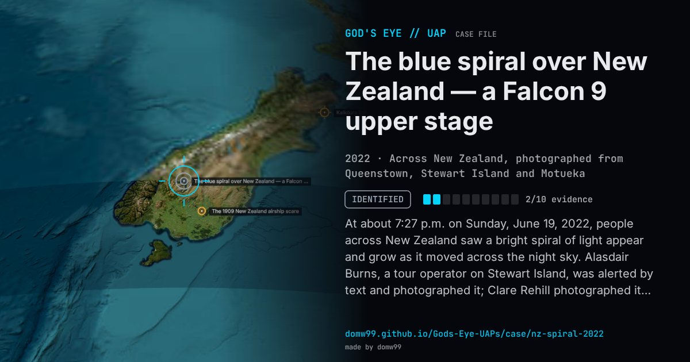

The blue spiral over New Zealand — a Falcon 9 upper stage

At about 7:27 p.m. on Sunday, June 19, 2022, people across New Zealand saw a bright spiral of light appear and grow as it moved across the night sky. Alasdair Burns, a tour operator on Stewart Island, was alerted by text and photographed it; Clare Rehill photographed it above Queenstown, and an observer in Motueka posted that it was “just happening”. Photographs went round the world the next day. Astronomers quickly tied it to a Falcon 9 launched three hours earlier, whose second stage was passing over New Zealand while it vented fuel before its de-orbit burn.
Explanation
The upper stage of the SpaceX Falcon 9 that launched the Globalstar FM15 satellite from Cape Canaveral at 04:27 UTC that day, venting its leftover propellant before the burn that brought it down into the Pacific. The New Plymouth Astronomical Society and satellite observers matched the time; the same kind of spiral has followed other Falcon 9 launches.
What was seen
Shape: A glowing blue-white spiral, growing as it moved across the sky
Witnesses: Stargazers and residents across the South Island and beyond, including a tour operator on Stewart Island
Duration: Several minutes
Sources
- Space.com — Wild blue spiral in New Zealand sky likely made by SpaceX rocket
- Newstalk ZB — Stargazers left in awe after spiral appears in night sky
- Spaceweather.com archive — Strange things in the sky, courtesy of SpaceX
Browse
- New Zealand
- 2020s
- Identified
- Photo and video cases
- Many independent witnesses
- Photographs
- Lights and fireballs